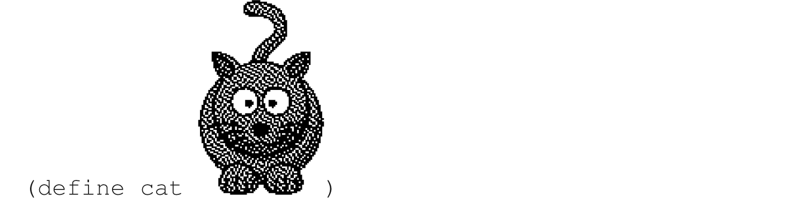

1.6 Mixing It Up with Booleans
One important use of Boolean values concerns calculations with different kinds of data. We know from the Prologue that BSL programs may name values via definitions. For example, we could start a program with
(define x 2)
and then compute its inverse:
(define inverse-of-x (/ 1 x))
This works fine, as long as we don’t edit the program and change x to 0.
This is where Boolean values come in, in particular conditional calculations. First, the primitive function = determines whether two (or more) numbers are equal. If so, it produces #true, otherwise #false. Second, there is a kind of BSL expression that we haven’t mentioned so far: the if expression. It uses the word “if” as if it were a primitive function; it isn’t. The word “if” is followed by three expressions, separated by blank spaces (that includes tabs, line breaks, etc.). Naturally the entire expression is enclosed in parentheses. Here is an example:
(if (= x 0) 0 (/ 1 x))
This if expression contains (= x 0), 0, and (/ 1 x), three so-called sub-expressions. The evaluation of this expression proceeds in two steps:
1. The first expression is always evaluated. Its result must be a Boolean.
2. If the result of the first expression is #true, then the second expression is evaluated; otherwise the third one is. Whatever their results are, they are also the result of the entire if expression.
Right-click on the result and choose a different representation.
Given the definition of x above, you can experiment with if expressions in the interactions area:
> (if (= x 0) 0 (/ 1 x))
0.5
Using the laws of arithmetic, you can figure out the result yourself:
(if (= x 0) 0 (/ 1 x))
== ; because x stands for 2
(if (= 2 0) 0 (/ 1 2))
== ; 2 is not equal to 0, (= 2 0) is #false
(if #false 0 (/ 1 x))
(/ 1 2)
== ; normalize this to its decimal representation
0.5
In other words, DrRacket knows that x stands for 2 and that the latter is not equal to 0. Hence, (= x 0) produces the result #false, meaning if picks its third sub-expression to be evaluated.
Stop! Imagine you edit the definition so that it looks like this:
(define x 0)
What do you think
(if (= x 0) 0 (/ 1 x))
evaluates to in this context? Why? Show your calculation.
In addition to =, BSL provides a host of other comparison primitives. Explain what the following four comparison primitives determine about numbers: <, <=, >, >=.
Strings aren’t compared with = and its relatives. Instead, you must use string=? or string<=? or string>=? if you ever need to compare strings. While it is obvious that string=? checks whether the two given strings are equal, the other two primitives are open to interpretation. Look up their documentation. Or, experiment, guess a general law, and then check in the documentation whether you guessed right.
You may wonder why it is ever necessary to compare strings with each other. So imagine a program that deals with traffic lights. It may use the strings "green", "yellow", and "red". This kind of program may contain a fragment such as this:
(define current-color …)
(define next-color
(if (string=? "green" current-color) "yellow" …))
It should be easy to imagine that this fragment deals with the computation that determines which light bulb is to be turned on next and which one should be turned off.
The dots in the definition of current-color aren’t a part of the program, of course. Replace them with a string that refers to a color.
The next few chapters introduce better expressions than if to express conditional computations and, most importantly, systematic ways for designing them.
Exercise 8. Add the following line to the definitions area:

Create a conditional expression that computes whether the image is tall or wide. An image should be labeled "tall" if its height is larger than or equal to its width; otherwise it is "wide". See exercise 1 for how to create such expressions in DrRacket; as you experiment, replace the cat with a rectangle of your choice to ensure that you know the expected answer.
Now try the following modification. Create an expression that computes whether a picture is "tall", "wide", or "square".